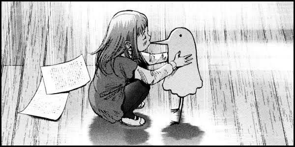
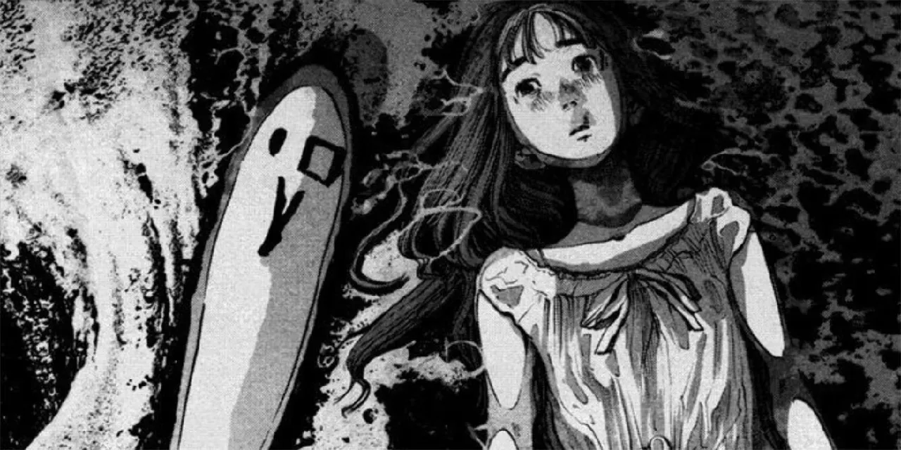

Ultimos mangas actualizados
Manga de la Semana
Oyasumi Punpun

"Oyasumi Punpun" es una obra maestra del mangaka Inio Asano. La historia sigue la vida de Punpun Punyama, un joven con una representación de pájaro, mientras enfrenta los desafíos de la vida, el amor y la pérdida.
Con una narrativa única y a menudo desgarradora, "Oyasumi Punpun" explora temas profundos y oscuros de la condición humana. Asano crea una experiencia emotiva que deja una marca duradera en los lectores.
